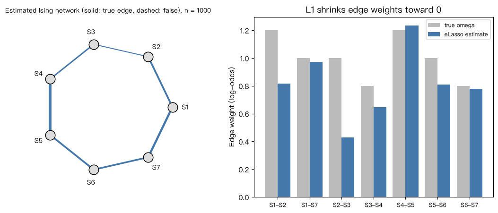

Example05 / 10
二值症状的 Ising 模型——Gibbs 抽样与逐节点 L1 逻辑回归（eLasso 思路）
先用 Gibbs 抽样从已知 Ising 模型生成 0/1 症状数据（模拟数据，仅用于演示方法）， 再对每个节点做 L1 正则化逻辑回归（近端梯度法），用 EBIC（γ = 0.25）选 λ， 最后用 AND 规则合并：β_ij 与 β_ji 都非零才保留边，边权取二者平均。 输出解读：n = 1000 时边的有无基本恢复正确，但部分边权被 L1 惩罚明显压小（收缩偏倚）， 阈值估计也相应偏离真值。ω_ij 是”其余症状固定时，i 与 j 的条件对数优势比”， 例如 ω = 1.2 意味着条件优势比 e^1.2 ≈ 3.3。阈值 τ 为负表示其余症状都不出现时该症状倾向于不出现。
Output输出图

Output文字输出
各症状出现率： [0.31 0.3 0.29 0.32 0.32 0.27 0.3 ] 真实边 7 条；估计边 7 条，命中 7，虚假 0 边 0-1: 真值 ω = 1.2，估计 0.82 边 0-6: 真值 ω = 1.0，估计 0.97 边 1-2: 真值 ω = 1.0，估计 0.43 边 2-3: 真值 ω = 0.8，估计 0.65 边 3-4: 真值 ω = 1.2，估计 1.23 边 4-5: 真值 ω = 1.0，估计 0.81 边 5-6: 真值 ω = 0.8，估计 0.78 阈值估计 τ： [-1.37 -1.27 -1.23 -1.3 -1.48 -1.49 -1.43] （真值均为 −1.5）
Code代码
# 先用 Gibbs 抽样从已知 Ising 模型生成 0/1 症状数据（模拟数据，仅用于演示方法），
# 再对每个节点做 L1 正则化逻辑回归（近端梯度法），用 EBIC（γ = 0.25）选 λ，
# 最后用 AND 规则合并：β_ij 与 β_ji 都非零才保留边，边权取二者平均。
# 输出解读：n = 1000 时边的有无基本恢复正确，但部分边权被 L1 惩罚明显压小（收缩偏倚），
# 阈值估计也相应偏离真值。ω_ij 是"其余症状固定时，i 与 j 的条件对数优势比"，
# 例如 ω = 1.2 意味着条件优势比 e^1.2 ≈ 3.3。阈值 τ 为负表示其余症状都不出现时该症状倾向于不出现。
import numpy as np
p = 7
OMEGA = np.zeros((p, p))
for (i, j), w in {(0, 1): 1.2, (1, 2): 1.0, (2, 3): 0.8, (3, 4): 1.2, (4, 5): 1.0,
(5, 6): 0.8, (0, 6): 1.0}.items():
OMEGA[i, j] = OMEGA[j, i] = w
TAU = np.full(p, -1.5)
def gibbs_ising(omega, tau, n, sweeps=200, seed=0):
"""对 n 条独立链并行 Gibbs 抽样，每条链取最后一个状态作为一名被试。"""
rng = np.random.default_rng(seed)
x = rng.integers(0, 2, size=(n, len(tau))).astype(float)
for _ in range(sweeps):
for i in range(len(tau)):
eta = tau[i] + x @ omega[:, i] # omega 对角为 0
x[:, i] = rng.random(n) < 1 / (1 + np.exp(-eta))
return x
def l1_logistic(Z, y, lam, beta0=None, iters=500):
"""近端梯度：min −(1/n)Σ loglik + λ|β|₁（截距不惩罚）。"""
n, k = Z.shape
A = np.column_stack([np.ones(n), Z])
b = np.zeros(k + 1) if beta0 is None else beta0.copy()
step = 4.0 / (np.linalg.norm(A, 2) ** 2 / n)
for _ in range(iters):
mu = 1 / (1 + np.exp(-A @ b))
b = b - step * (A.T @ (mu - y) / n)
b[1:] = np.sign(b[1:]) * np.maximum(np.abs(b[1:]) - step * lam, 0)
return b
def ising_elasso(X, gamma=0.25, n_lambda=30):
n, p = X.shape
B = np.zeros((p, p))
tau_hat = np.zeros(p)
for i in range(p):
Z, y = np.delete(X, i, axis=1), X[:, i]
lam_max = np.max(np.abs(Z.T @ (y - y.mean()))) / n
best, b = None, None
for lam in np.exp(np.linspace(np.log(lam_max), np.log(0.01 * lam_max), n_lambda)):
b = l1_logistic(Z, y, lam, b)
eta = b[0] + Z @ b[1:]
ll = np.sum(y * eta - np.log1p(np.exp(eta)))
k = int(np.sum(np.abs(b[1:]) > 1e-6))
ebic = -2 * ll + k * np.log(n) + 2 * gamma * k * np.log(p - 1)
if best is None or ebic < best[0]:
best = (ebic, b.copy())
B[i, np.arange(p) != i] = best[1][1:]
tau_hat[i] = best[1][0]
nz = (np.abs(B) > 1e-6) & (np.abs(B.T) > 1e-6) # AND 规则
return np.where(nz, (B + B.T) / 2, 0.0), tau_hat
X = gibbs_ising(OMEGA, TAU, n=1000)
print("各症状出现率：", np.round(X.mean(axis=0), 2))
W, tau_hat = ising_elasso(X)
iu = np.triu_indices(p, 1)
true_e = {(i, j) for i, j in zip(*iu) if OMEGA[i, j] != 0}
est_e = {(i, j) for i, j in zip(*iu) if W[i, j] != 0}
print(f"真实边 {len(true_e)} 条；估计边 {len(est_e)} 条，命中 {len(est_e & true_e)}，虚假 {len(est_e - true_e)}")
for (i, j) in sorted(true_e):
print(f" 边 {i}-{j}: 真值 ω = {OMEGA[i, j]:.1f}，估计 {W[i, j]:.2f}")
print("阈值估计 τ：", np.round(tau_hat, 2), "（真值均为 −1.5）")
import networkx as nx
import matplotlib.pyplot as plt
fig, axes = plt.subplots(1, 2, figsize=(10, 4.2))
pos = nx.circular_layout(range(p))
G = nx.Graph(); G.add_nodes_from(range(p))
G.add_weighted_edges_from((i, j, W[i, j]) for i, j in zip(*iu) if W[i, j] != 0)
for es, style, col in [([e for e in G.edges() if tuple(sorted(e)) in true_e], "solid", "#4477AA"),
([e for e in G.edges() if tuple(sorted(e)) not in true_e], "dashed", "#CC6677")]:
nx.draw_networkx_edges(G, pos, edgelist=es, ax=axes[0], style=style, edge_color=col,
width=[3 * abs(G[u][v]["weight"]) for u, v in es])
nx.draw_networkx_nodes(G, pos, ax=axes[0], node_size=180, node_color="#DDDDDD", edgecolors="k")
nx.draw_networkx_labels(G, {k: 1.2 * v for k, v in pos.items()}, labels={i: f"S{i + 1}" for i in range(p)}, ax=axes[0], font_size=9)
axes[0].set_title(f"Estimated Ising network (solid: true edge, dashed: false), n = {len(X)}", fontsize=9)
axes[0].set_aspect("equal"); axes[0].axis("off"); axes[0].set_xlim(-1.4, 1.4); axes[0].set_ylim(-1.4, 1.4)
te = sorted(true_e)
x = np.arange(len(te))
axes[1].bar(x - 0.2, [OMEGA[e] for e in te], 0.4, color="#BBBBBB", label="true omega")
axes[1].bar(x + 0.2, [W[e] for e in te], 0.4, color="#4477AA", label="eLasso estimate")
axes[1].set_xticks(x, [f"S{i + 1}-S{j + 1}" for i, j in te], fontsize=8)
axes[1].set(ylabel="Edge weight (log-odds)", title="L1 shrinks edge weights toward 0")
axes[1].legend(fontsize=8)
plt.tight_layout(); plt.show()Run在浏览器中运行
首次加载 Python 环境约需 20–40 秒；可以修改参数后重新运行。